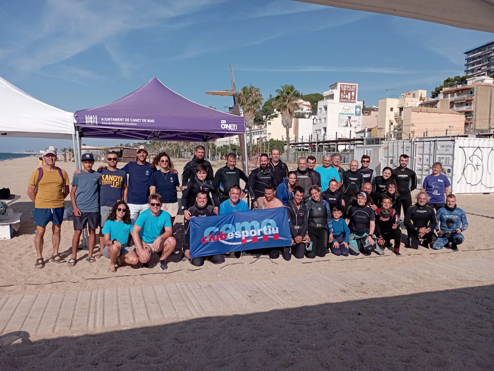
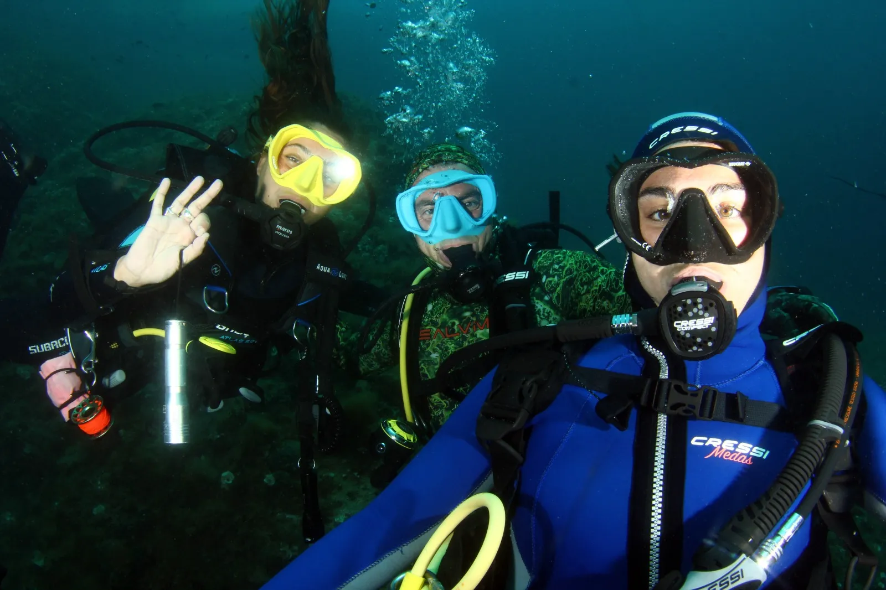
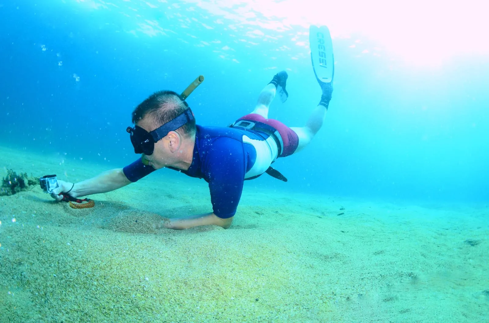
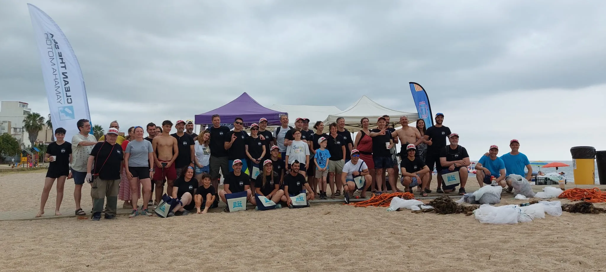
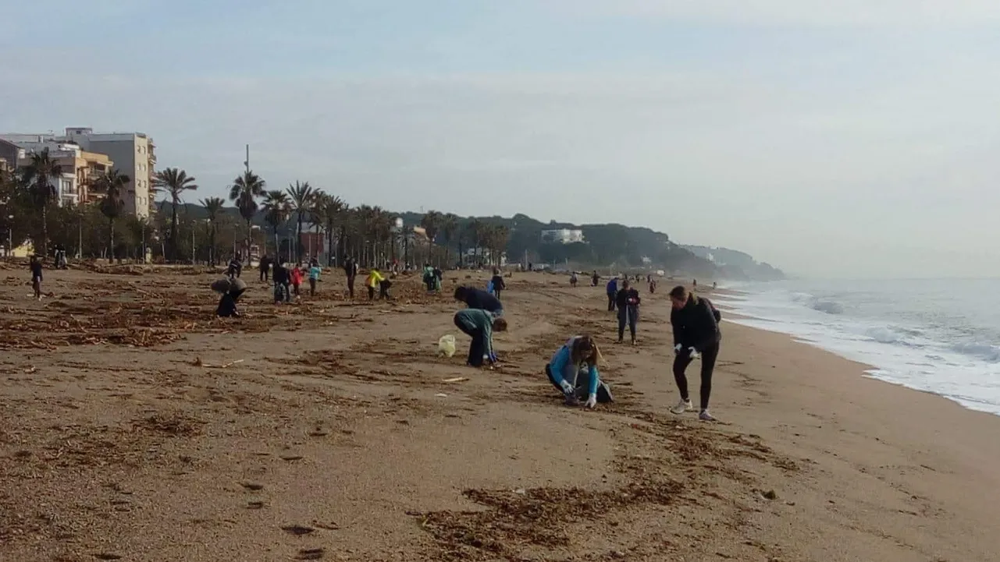

12 · Conservación local
Thalassa Canet
ContactadoPosibilidad de acceso: Según actividad
Thalassa Canet es una asociación local dedicada a preservar el litoral de Canet de Mar mediante divulgación, educación y jornadas de limpieza en la playa y el fondo marino.





Personas y actividades
El contacto identificado es Quim Crusat. La asociación reúne biólogos marinos, pescadores y buceadores; organiza limpiezas, charlas en escuelas y exposiciones fotográficas sobre la biodiversidad submarina local.
Vínculo documental
Su escala local permite seguir una relación sostenida con un mismo tramo de costa: quién observa sus cambios, qué residuos aparecen, cómo se moviliza la comunidad y qué conocimiento producen las personas que bucean allí.
Contacto
info@thalassacanet.cat